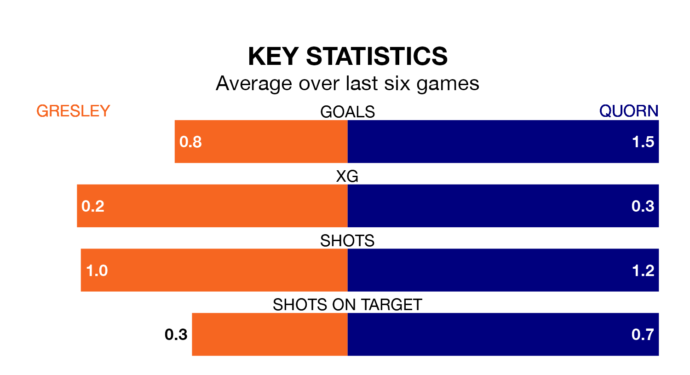

Gresley welcome Quorn to the Moat Ground on Saturday looking to pick up points to end their four-game losing streak.
Gresley's struggles have left them with just three points from their last six Northern Premier League Division One – Midlands matches, while their opponents have earned 11 from a possible 18.
Gresley are 19th in the table after 28 games, of which they have won four and drawn six, earning 18 points.
Quorn are 12 places ahead of the home team in seventh, with 12 wins and seven draws putting them on 43 points.
With 28 goals in 28 games so far this season, Gresley are scoring at below the league average rate with 1.0 goals per game. And they are conceding more than average, letting in 75 goals at a rate of 2.7 per game.
The visitors, meanwhile, are above average scorers, with 1.9 goals per game, compared to a league average of 1.5. They have conceded 1.3 goals per game.
Gresley's last match was on February 10, a 4-1 loss against Loughborough Dynamo.
Quorn beat Coleshill Town 3-1 last time out, on February 3.
Updated: 12:06 (UTC), 15/02/24